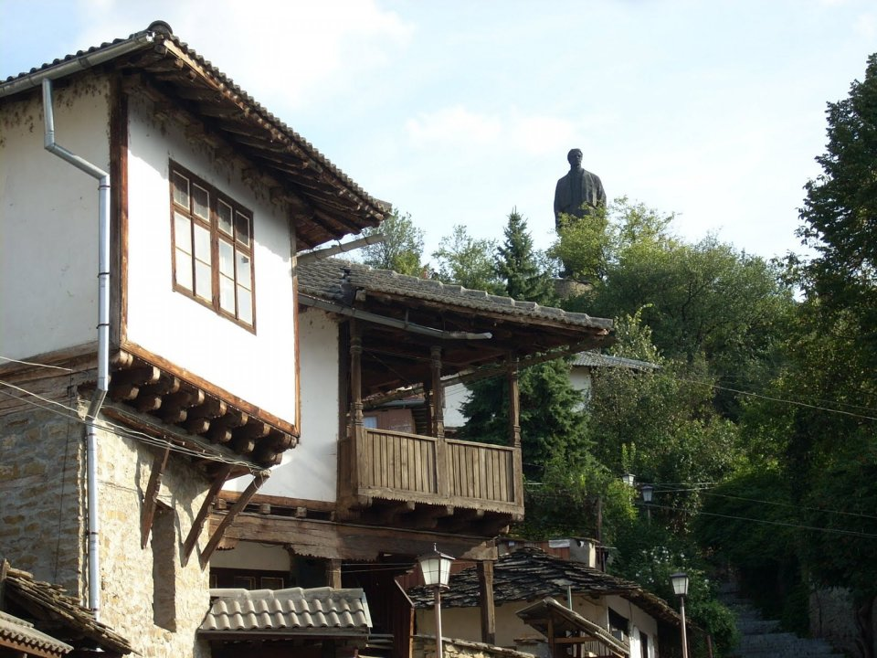

History of an Ancient Town
Ancient Roots

Discover Lovetch /transliteration/, one of Bulgaria's oldest settlements, nestled between mountains and plains with a river flowing nearby. Traces of human activity here date back to ancient times, evidenced by remains found in caves, spanning from the Stone to the Iron Ages. From Thracian tribes to Roman conquests, Lovetch played a vital role in history, marked by the presence of Roman road stations like "Melta" and "Prezidium." Explore the remnants of late antique churches and evidence of Slavic settlement, revealing layers of history on the hill of "Hisarya."
Medieval Period

Little is known about the development of Lovetch during the First Bulgarian Empire. The medieval fortress of Lovetch is known from the time of the Second Bulgarian Empire. It is situated on a hill, later named "Hisarya". Here, in 1187, a decisive battle took place between the rebel army of the Asen dynasty and Byzantium. The signed peace treaty marked the recognition of the Second Bulgarian Empire. In the 14th century, Lovetch was ruled by despot Ivan Alexander of the Shishman dynasty. In 1331, Ivan Alexander was elected as Bulgarian tsar. Lovetch fortress was one of the last to be conquered during the Ottoman invasion.
Revival Period

During the Bulgarian Revival era, the town thrived with various crafts such as tanning, ironworking, pottery, and more.
Lovetch residents were skilled merchants, bakers, confectioners, and artisans, showcasing diverse economic activities.
Additionally, Lovetch engaged in trade within the Ottoman Empire and Europe. By the late 17th and early 18th centuries,
due to its wealth, the town earned the nickname "Altin Lovetch" (Golden Lovetch).
Cultural development centered around the activities of the "Nativity of the Mother of God" monastery.
Its notable manuscripts include the "Trebnik" (preserved in the Rila Monastery) and a transcript of Boril's Synodicon (preserved in Saint Petersburg).
On January 1, 1870, the Lovetch Chitalishte "Science" was founded, hosting a library, storytelling sessions, evening gatherings, and Sunday readings.
In the same year, the first theatrical play "Princess Raina" was performed.
In the "Varosha" quarter, free and accessible schools were established for all children.
 During the Russian-Turkish Wars of the 19th century, Lovetch frequently played a strategic role in military operations.
In the Russian-Turkish War of 1806-1812, Russian forces captured Lovetch twice, hindering Ottoman advances in Northern Bulgaria.
During the Russian-Turkish Wars of the 19th century, Lovetch frequently played a strategic role in military operations.
In the Russian-Turkish War of 1806-1812, Russian forces captured Lovetch twice, hindering Ottoman advances in Northern Bulgaria.
Lovetch gained renown as a center of Vasil Levski's Internal Revolutionary Organization.
The Lovetch private revolutionary committee was proclaimed a "Provisional Government" (Internal Central Revolutionary Committee).
Levski regularly visited the town between 1869 and 1872.
Between 1872 and 1874, master builder Nikola Fichev constructed the unique Covered Bridge, the only one of its kind in the Balkans.
Unfortunately, it was destroyed by fire in 1925 but later rebuilt in 1931.
Russian-Turkish War (1877 – 1878)

During the Russian-Turkish War of 1877-1878, Lovech witnessed two liberations by Russian forces. Initially freed on July 5, 1877, the city fell again on July 15 due to the advance of the Western Ottoman Army, resulting in pillage and devastation, with approximately 2,600 civilians massacred. Following the Russian victory at the Shipka Pass, Major General Alexander Imeretinsky's forces, comprising over 22,000 troops, reclaimed Lovech on August 22. The city commemorated its liberation by erecting the White Monument and the Black Monument on Stratesh hill.
Post-Liberation Era

The war led to the establishment of the local Bulgarian governance system overseen
by the Lovetch Municipality. Ivan Drasov became Lovetch's first elected mayor.
For the initial 22 years of free Bulgaria, Lovetch served as the regional center for Lovetch,
Troyan, and Teteven. It became a regional center in 1901.
The railway line from Levski to Lovetch was constructed between 1921 and 1927,
connecting the city to the country's railway network. During World War II, following the
major bombing of Sofia on January 10, 1944, Sofia University "St. Kliment Ohridski"
was evacuated to Lovetch.
Lovetch became a district town in 1959 and a regional center in 1987.